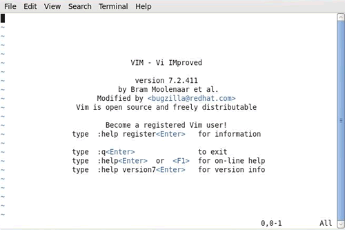
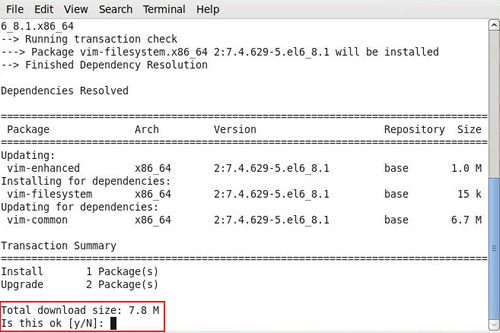
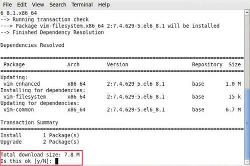
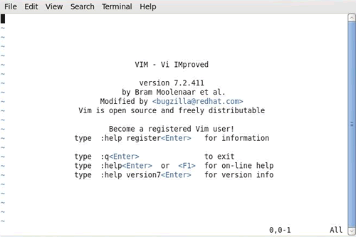

什么是Vim，Vim及其安装
通过前面的学习我们知道，Linux 系统中“一切皆文件”，因此当我们在命令行下更改文件内容时，不可避免地要用到文本编辑器。
作为一名 Linux 初学者，你必须熟练掌握 Linux 中至少一款文本编辑器的用法。对文本编辑器的功能（如查找、剪切和粘贴）了解越多，对你越有帮助。
可供选择的编辑器不止一种，例如 Vim、emacs、pico、nano 等，很多人都找到了自己所喜爱的编辑器。综合考虑各种因素，本套 Linux 教程建议初学者学习 Vim 文本编辑器。
Vim文本编辑器，是由 vi 发展演变过来的文本编辑器，因其具有使用简单、功能强大、是 Linux 众多发行版的默认文本编辑器等特点，成功圈住了很多人成为其死忠粉丝。
如果你想省略手动输入“y”的过程，希望全自动安装，可以使用如下这条命令：
当命令行中输入“Vim”显示如图 1 所示的画面时，视为 Vim 安装成功。

图 1 Vim 安装成功界面
作为一名 Linux 初学者，你必须熟练掌握 Linux 中至少一款文本编辑器的用法。对文本编辑器的功能（如查找、剪切和粘贴）了解越多，对你越有帮助。
可供选择的编辑器不止一种，例如 Vim、emacs、pico、nano 等，很多人都找到了自己所喜爱的编辑器。综合考虑各种因素，本套 Linux 教程建议初学者学习 Vim 文本编辑器。
Vim文本编辑器，是由 vi 发展演变过来的文本编辑器，因其具有使用简单、功能强大、是 Linux 众多发行版的默认文本编辑器等特点，成功圈住了很多人成为其死忠粉丝。
关于 vi 和 Vim 之间的区别和联系，后续会进行详细介绍，这里不再赘述。
Vim 的安装
众多 Linux 发行版系统，通常都已经默认安装好了 vi 或 Vim 文本编辑器，Centos 也不例外，该系统就默认安装有 vi 文本编辑器，但建议大家使用 Vim。如果在命令行模式下输入“vim”，输出结果为“Command not found”，则表示此系统中未安装 Vim。
CentOS 系统中，使用如下命令即可安装 Vim：yum install vim
需要注意的是，此命令运行时，有时需要手动确认 [y/n]，如图 1 所示：
、

图 1 安装过程
遇到此情况，选择 “y” 即可。
图 1 安装过程
如果你想省略手动输入“y”的过程，希望全自动安装，可以使用如下这条命令：
yum -y install vim
有关 yum 的使用后续章节会进行详细介绍，此处不用深究。当命令行中输入“Vim”显示如图 1 所示的画面时，视为 Vim 安装成功。

图 1 Vim 安装成功界面
关注公众号「站长严长生」，在手机上阅读所有教程，随时随地都能学习。内含一款搜索神器，免费下载全网书籍和视频。

微信扫码关注公众号